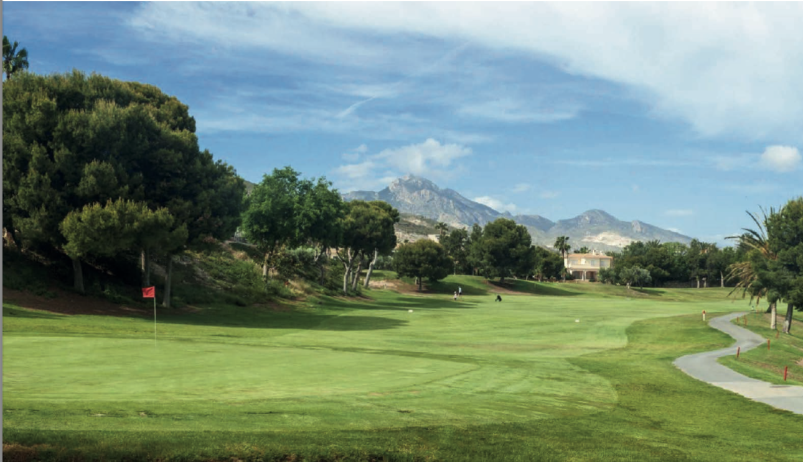

Działki Costa Blanca — ekskluzywne grunty pod willę, inwestycję i życie w Hiszpanii
Wyselekcjonowane działki w Alicante, Finestrat i Benidorm — pod dom prywatny, willę premium lub projekt inwestycyjny z potencjałem wzrostu wartości.
Pracujemy wyłącznie na sprawdzonych działkach — analizujemy grunt, możliwości zabudowy i realny potencjał inwestycji, abyś kupował świadomie i bez ryzyka.

Dlaczego warto kupić działkę Costa Blanca i grunt inwestycyjny Hiszpania
Elastyczność projektu
Działka daje większą swobodę niż gotowa nieruchomość — możesz zrealizować własny dom, willę premium lub projekt inwestycyjny dopasowany do budżetu i strategii.
Wzrost wartości
Dobrze położone grunty w regionie Alicante–Benidorm należą do najbardziej poszukiwanych aktywów na Costa Blanca, szczególnie blisko morza i rozwiniętej infrastruktury.
Bezpieczny wybór
Weryfikujemy status urbanistyczny, dojazd, media i możliwości zabudowy, aby zakup działki był przejrzysty i bezpieczny od początku do końca.
Wybrane działki Costa Blanca i plots for sale Alicante Spain
Każda oferta może prowadzić do osobnej strony z parametrami, lokalizacją i potencjałem inwestycyjnym.
Najlepsze lokalizacje: działka Alicante Hiszpania i Costa Blanca plots
Finestrat, San Juan, Alicante, El Campello i okolice Benidormu należą do najczęściej wybieranych lokalizacji dla klientów szukających działki pod budowę domu lub inwestycję.
Finestrat
Prestiżowa lokalizacja z widokami, nową zabudową i bliskością Benidormu — idealna pod willę premium lub projekt inwestycyjny.
San Juan i Alicante
Mocne lokalizacje pod dom prywatny lub second home, z dostępem do plaż, usług, szkół i całorocznej infrastruktury miejskiej.
El Campello i okolice
Obszary atrakcyjne dla klientów szukających większej prywatności, spokoju i dobrej relacji między lokalizacją a potencjałem wzrostu wartości.
FAQ — działki na Costa Blanca
Czy warto kupić działkę na Costa Blanca?
Tak. Dobrze położony grunt może dać dużą elastyczność inwestycyjną, wzrost wartości i możliwość realizacji domu dokładnie dopasowanego do potrzeb klienta.
Na co zwrócić uwagę przy zakupie działki?
Najważniejsze są: status urbanistyczny, media, dojazd, ograniczenia zabudowy, koszty przygotowania gruntu oraz lokalizacja względem infrastruktury i morza.
Czy pomagacie w budowie po zakupie działki?
Tak. Możemy przeprowadzić klienta od wyboru działki przez koncepcję domu aż po realizację budowy w Hiszpanii.
Działki Costa Blanca — jak bezpiecznie kupić grunt w Hiszpanii
Rynek działek na Costa Blanca
Działki Costa Blanca cieszą się rosnącym zainteresowaniem zarówno wśród klientów prywatnych, jak i inwestorów. Region Alicante–Benidorm oferuje unikalne połączenie klimatu, infrastruktury oraz stabilnego popytu na nieruchomości. Dzięki temu zakup gruntu w Hiszpanii staje się nie tylko decyzją lifestyle’ową, ale także strategiczną inwestycją kapitału.
Działka Alicante Hiszpania — na co uważać
Zakup działki w Hiszpanii wymaga dokładnej analizy technicznej i urbanistycznej. Jednym z kluczowych, a często pomijanych aspektów jest struktura gruntu. Na wielu działkach może występować podziemna warstwa twardej skały, która znacząco ogranicza możliwości zabudowy. W praktyce oznacza to, że mimo atrakcyjnej lokalizacji, realna powierzchnia budowy może być mniejsza niż zakładana, a koszty realizacji projektu znacznie wyższe.
Dlaczego weryfikacja działki jest kluczowa
Dlatego każdą działkę analizujemy kompleksowo — od dokumentacji urbanistycznej po wizję lokalną z udziałem specjalistów: geodetów i architektów. Sprawdzamy nie tylko formalne możliwości zabudowy, ale także realne warunki techniczne realizacji projektu. Dzięki temu klient unika ryzyk, które mogą pojawić się dopiero na etapie budowy.
Działki budowlane Hiszpania i grunt inwestycyjny
Oferujemy zarówno działki pod zabudowę prywatną — idealne pod dom lub willę premium — jak i większe grunty inwestycyjne pod projekty deweloperskie i urbanizacje. Każdy projekt analizujemy pod kątem potencjału wzrostu wartości oraz opłacalności inwestycji w długim terminie.
Nasze doświadczenie i dostęp do ofert
Dzięki rozbudowanej sieci kontaktów lokalnych mamy dostęp do ofert „z pierwszej ręki”, często jeszcze przed pojawieniem się na rynku. Współpracujemy z firmą z ponad 30-letnim doświadczeniem w regionie Costa Blanca, co pozwala nam precyzyjnie ocenić wartość działki i potencjał inwestycyjny projektu.
Buy land Alicante Spain — bezpiecznie i świadomie
Jeśli planujesz kupić działkę w Hiszpanii, skontaktuj się z nami. Dobierzemy grunt dopasowany do Twoich celów — czy to budowa domu, willi premium czy inwestycja. Przeprowadzimy Cię przez cały proces — od analizy po realizację — aby Twoja decyzja była bezpieczna i maksymalnie efektywna.
Dział sprzedaży
Skontaktuj się, aby otrzymać działki dopasowane do budżetu, lokalizacji i celu zakupu — pod dom prywatny lub inwestycję.